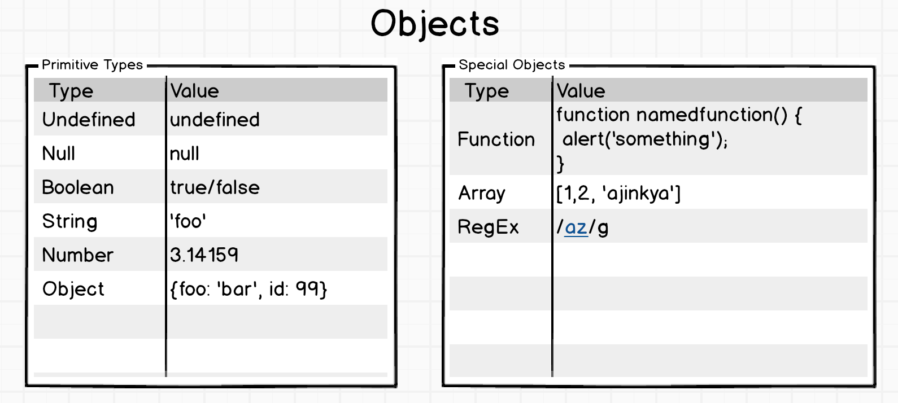
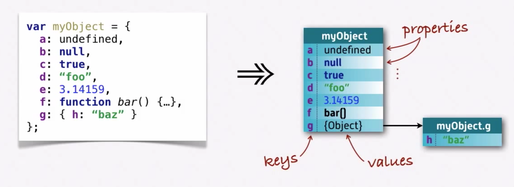

Hello 'JS' World!
JavaScript, not to be confused with Java (same goes with Hamburger), was created in 10 days in May 1995 by Brendan Eich, then working at Netscape and now of Mozilla. JavaScript was not always known as JavaScript: the original name was Mocha, a name chosen by Marc Andreessen, founder of Netscape.
Eventually we will also get our hands on real code;
"Those who are unaware they are walking in darkness will never seek the light"

"Its a set of key value pairs. Each key can be assigned any value type"

Important note's:
means, same name but deffirent behaviour. Polymorphism cant be there without `Inheritance`
Polymorphism
non-functional (bad)
Avoid mutation (bad)
No mutation (good)
Array - slice, split, reduce - angular alike filter
001_array-slice.js
Impure function
Avoid side effects, use pure functions
Pure function
Functions containing one or more free variables are called 'closures'
Closure
Higher-order functions